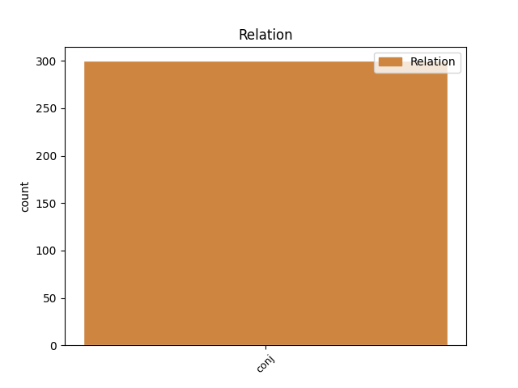
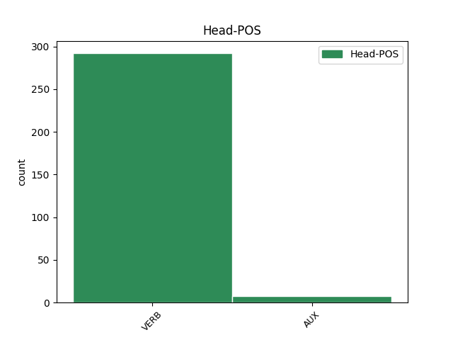
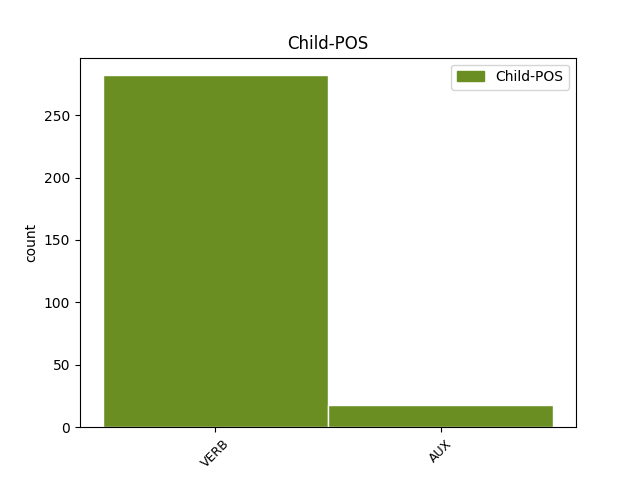

Distribution of features within this leaf



Agreement Rules sorted by frequency.
- When the dependent token is the conjunct(conj) of the head token,
1 A _ _ _ _ 0 _ _ _
2 magukat _ _ _ _ 0 _ _ _
3 nyeregben _ _ _ _ 0 _ _ _
4 érző _ _ _ _ 0 _ _ _
5 albánok _ _ _ _ 0 _ _ _
6 azonnal _ _ _ _ 0 _ _ _
7 elvetették _ _ _ _ 0 _ _ _
8 a _ _ _ _ 0 _ _ _
9 kantonizáció _ _ _ _ 0 _ _ _
10 tervét _ _ _ _ 0 _ _ _
11 , _ _ _ _ 0 _ _ _
12 s _ _ _ _ 0 _ _ _
13 Hasim _ _ _ _ 0 _ _ _
14 Thaci _ _ _ _ 0 _ _ _
15 , _ _ _ _ 0 _ _ _
16 a _ _ _ _ 0 _ _ _
17 Koszovói _ _ _ _ 0 _ _ _
18 Felszabadítási _ _ _ _ 0 _ _ _
19 Hadsereg _ _ _ _ 0 _ _ _
20 ( _ _ _ _ 0 _ _ _
21 UCK _ _ _ _ 0 _ _ _
22 ) _ _ _ _ 0 _ _ _
23 vezetője _ _ _ _ 0 _ _ _
24 és _ _ _ _ 0 _ _ _
25 a _ _ _ _ 0 _ _ _
26 világ _ _ _ _ 0 _ _ _
27 által _ _ _ _ 0 _ _ _
28 még _ _ _ _ 0 _ _ _
29 el _ _ _ _ 0 _ _ _
30 nem _ _ _ _ 0 _ _ _
31 ismert _ _ _ _ 0 _ _ _
32 koszovói _ _ _ _ 0 _ _ _
33 kormány _ _ _ _ 0 _ _ _
34 első _ _ _ _ 0 _ _ _
35 embere _ _ _ _ 0 _ _ _
36 közölte _ _ _ _ 0 _ _ _
37 : _ _ _ _ 0 _ _ _
38 nincs nincs VERB _ Definite=Ind|Mood=Ind|Number=Sing|Person=3|Tense=Pres|VerbForm=Fin|Voice=Act 0 _ _ _
39 idő _ _ _ _ 0 _ _ _
40 a _ _ _ _ 0 _ _ _
41 megosztásról _ _ _ _ 0 _ _ _
42 tárgyalni _ _ _ _ 0 _ _ _
43 , _ _ _ _ 0 _ _ _
44 s _ _ _ _ 0 _ _ _
45 aki _ _ _ _ 0 _ _ _
46 erről _ _ _ _ 0 _ _ _
47 a _ _ _ _ 0 _ _ _
48 kérdésről _ _ _ _ 0 _ _ _
49 akar _ _ _ _ 0 _ _ _
50 vitatkozni _ _ _ _ 0 _ _ _
51 , _ _ _ _ 0 _ _ _
52 az _ _ _ _ 0 _ _ _
53 menjen megy VERB _ Definite=Ind|Mood=Imp|Number=Sing|Person=3|Tense=Pres|VerbForm=Fin|Voice=Act 38 conj _ _
54 el _ _ _ _ 0 _ _ _
55 Belgrádba _ _ _ _ 0 _ _ _
56 , _ _ _ _ 0 _ _ _
57 a _ _ _ _ 0 _ _ _
58 tudományos _ _ _ _ 0 _ _ _
59 akadémiára _ _ _ _ 0 _ _ _
60 . _ _ _ _ 0 _ _ _
Disagree Examples:
1 A _ _ _ _ 0 _ _ _
2 belső _ _ _ _ 0 _ _ _
3 fogyasztás _ _ _ _ 0 _ _ _
4 mérséklődött mérséklődik VERB _ Definite=Ind|Mood=Ind|Number=Sing|Person=3|Tense=Past|VerbForm=Fin|Voice=Act 0 _ _ _
5 tavalyhoz _ _ _ _ 0 _ _ _
6 képest _ _ _ _ 0 _ _ _
7 , _ _ _ _ 0 _ _ _
8 bővülése _ _ _ _ 0 _ _ _
9 idén _ _ _ _ 0 _ _ _
10 nem _ _ _ _ 0 _ _ _
11 fogja fog AUX _ Definite=Def|Mood=Ind|Number=Sing|Person=3|Tense=Pres|Voice=Act 4 conj _ _
12 meghaladni _ _ _ _ 0 _ _ _
13 a _ _ _ _ 0 _ _ _
14 bruttó _ _ _ _ 0 _ _ _
15 nemzeti _ _ _ _ 0 _ _ _
16 össztermék _ _ _ _ 0 _ _ _
17 ( _ _ _ _ 0 _ _ _
18 GDP _ _ _ _ 0 _ _ _
19 ) _ _ _ _ 0 _ _ _
20 növekedését _ _ _ _ 0 _ _ _
21 . _ _ _ _ 0 _ _ _
1 Az _ _ _ _ 0 _ _ _
2 elmúlt _ _ _ _ 0 _ _ _
3 évben _ _ _ _ 0 _ _ _
4 főként _ _ _ _ 0 _ _ _
5 informatikusokat _ _ _ _ 0 _ _ _
6 , _ _ _ _ 0 _ _ _
7 villamosmérnököket _ _ _ _ 0 _ _ _
8 , _ _ _ _ 0 _ _ _
9 gépészmérnököket _ _ _ _ 0 _ _ _
10 kerestek keres VERB _ Definite=Ind|Mood=Ind|Number=Plur|Person=3|Tense=Past|VerbForm=Fin|Voice=Act 0 _ _ _
11 a _ _ _ _ 0 _ _ _
12 vállalatok _ _ _ _ 0 _ _ _
13 , _ _ _ _ 0 _ _ _
14 jövőre _ _ _ _ 0 _ _ _
15 várhatóan _ _ _ _ 0 _ _ _
16 más _ _ _ _ 0 _ _ _
17 műszaki _ _ _ _ 0 _ _ _
18 területekről _ _ _ _ 0 _ _ _
19 is _ _ _ _ 0 _ _ _
20 igényelnek igényel VERB _ Definite=Ind|Mood=Ind|Number=Plur|Person=3|Tense=Pres|VerbForm=Fin|Voice=Act 10 conj _ _
21 szakembereket _ _ _ _ 0 _ _ _
22 . _ _ _ _ 0 _ _ _
1 Persze _ _ _ _ 0 _ _ _
2 jól _ _ _ _ 0 _ _ _
3 jönnek _ _ _ _ 0 _ _ _
4 a _ _ _ _ 0 _ _ _
5 hómunkások _ _ _ _ 0 _ _ _
6 , _ _ _ _ 0 _ _ _
7 amikor _ _ _ _ 0 _ _ _
8 már _ _ _ _ 0 _ _ _
9 megtörtént meg+történik VERB _ Definite=Ind|Mood=Ind|Number=Sing|Person=3|Tense=Past|VerbForm=Fin|Voice=Act 0 _ _ _
10 a _ _ _ _ 0 _ _ _
11 baj _ _ _ _ 0 _ _ _
12 , _ _ _ _ 0 _ _ _
13 és _ _ _ _ 0 _ _ _
14 a _ _ _ _ 0 _ _ _
15 csupadísz _ _ _ _ 0 _ _ _
16 Audit _ _ _ _ 0 _ _ _
17 ki _ _ _ _ 0 _ _ _
18 kell kell VERB _ Definite=Ind|Mood=Ind|Number=Sing|Person=3|Tense=Pres|VerbForm=Fin|Voice=Act 9 conj _ _
19 szabadítani _ _ _ _ 0 _ _ _
20 a _ _ _ _ 0 _ _ _
21 kátyúból _ _ _ _ 0 _ _ _
22 . _ _ _ _ 0 _ _ _
1 Új _ _ _ _ 0 _ _ _
2 népszokás _ _ _ _ 0 _ _ _
3 született születik VERB _ Definite=Ind|Mood=Ind|Number=Sing|Person=3|Tense=Past|VerbForm=Fin|Voice=Act 0 _ _ _
4 , _ _ _ _ 0 _ _ _
5 aki _ _ _ _ 0 _ _ _
6 unatkozik _ _ _ _ 0 _ _ _
7 , _ _ _ _ 0 _ _ _
8 kimegy ki+megy VERB _ Definite=Ind|Mood=Ind|Number=Sing|Person=3|Tense=Pres|VerbForm=Fin|Voice=Act 3 conj _ _
9 a _ _ _ _ 0 _ _ _
10 ház _ _ _ _ 0 _ _ _
11 elé _ _ _ _ 0 _ _ _
12 , _ _ _ _ 0 _ _ _
13 és _ _ _ _ 0 _ _ _
14 elhányja _ _ _ _ 0 _ _ _
15 a _ _ _ _ 0 _ _ _
16 havat _ _ _ _ 0 _ _ _
17 . _ _ _ _ 0 _ _ _
1 Nemcsak _ _ _ _ 0 _ _ _
2 a _ _ _ _ 0 _ _ _
3 Pilis _ _ _ _ 0 _ _ _
4 lábainál _ _ _ _ 0 _ _ _
5 küzdenek küzd VERB _ Definite=Ind|Mood=Ind|Number=Plur|Person=3|Tense=Pres|VerbForm=Fin|Voice=Act 0 _ _ _
6 az _ _ _ _ 0 _ _ _
7 elemekkel _ _ _ _ 0 _ _ _
8 , _ _ _ _ 0 _ _ _
9 Csobánka _ _ _ _ 0 _ _ _
10 , _ _ _ _ 0 _ _ _
11 Százhalombatta _ _ _ _ 0 _ _ _
12 és _ _ _ _ 0 _ _ _
13 Ercsi _ _ _ _ 0 _ _ _
14 is _ _ _ _ 0 _ _ _
15 hó _ _ _ _ 0 _ _ _
16 alá _ _ _ _ 0 _ _ _
17 került kerül VERB _ Definite=Ind|Mood=Ind|Number=Sing|Person=3|Tense=Past|VerbForm=Fin|Voice=Act 5 conj _ SpaceAfter=No
18 . _ _ _ _ 0 _ _ _